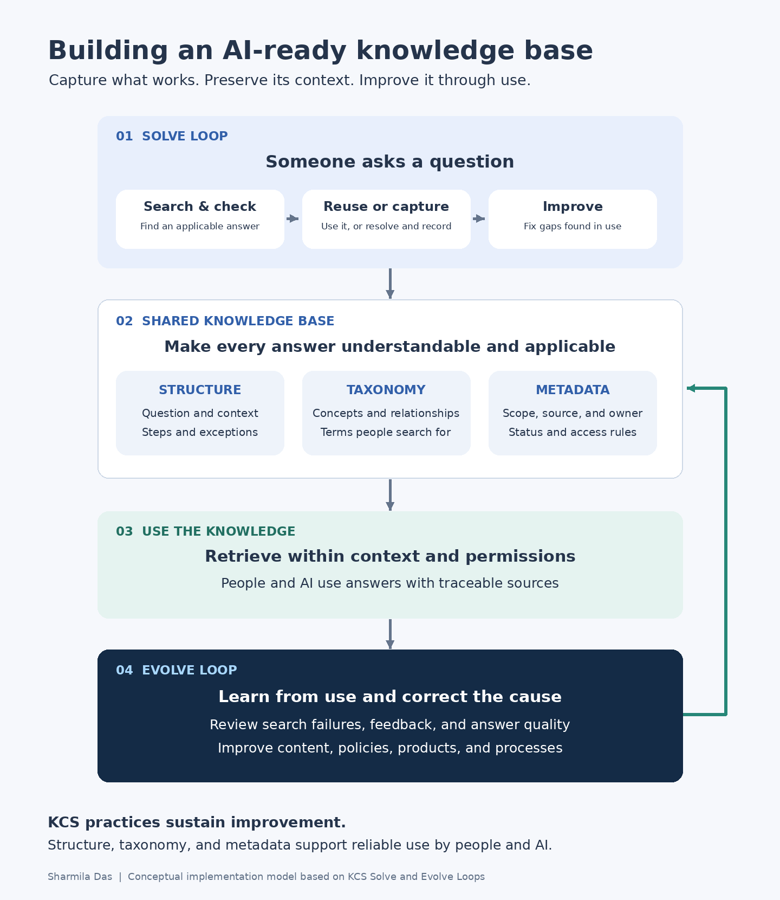

Knowledge management · KCS · AI readiness
Building a Knowledge Base That Works for People and AI
Download the Word article with diagramThe problem is that answers exist but people still struggle to find them
An employee searches for a leave policy and finds three articles with different instructions. A support agent answers a question that another team resolved last week. An AI assistant retrieves a relevant paragraph but misses the exception that changes the answer.
These problems share a common cause: the organization has information, but it has not made the information consistently usable.
Articles may leave out important context. Different teams may use different terms for the same concept. Ownership may be unclear, and outdated guidance may appear alongside approved policies. People compensate by asking a colleague or opening a support request. An AI system may produce a confident answer from incomplete evidence.
Adding more articles will only help if the organization also improves how knowledge is captured, organized, maintained, and used.
Connect everyday work to dependable knowledge
A practical approach combines three things:
- KCS practices to capture and improve knowledge while answering real questions.
- Structure, taxonomy, and metadata to make each answer understandable and easier to retrieve.
- Clear ownership and evaluation to keep guidance accurate and appropriate for its audience.
Knowledge-Centered Service, or KCS, provides the operating method. Its Solve Loop covers capturing, structuring, reusing, and improving knowledge during individual interactions. Its Evolve Loop examines patterns across those interactions to improve content, processes, and services. These practices come from the Consortium for Service Innovation. [1]


Capture the answer while solving the problem
The best time to capture useful knowledge is while the question and its context are still clear.
Suppose someone asks, “Why can’t I see my leave balance?” The person helping them searches the knowledge base and finds an article about leave eligibility. During the conversation, they discover that the employee recently transferred between countries and that the transfer affects when the balance appears.
That detail belongs in the shared knowledge, with the appropriate policy owner’s confirmation. Otherwise, the next person will have to investigate the same issue again.
The workflow becomes:
- Search for an existing answer.
- Check whether it fits the situation.
- Use it to resolve the question.
- Improve anything missing or unclear.
- Create a new article when no suitable answer exists.
This is how knowledge maintenance becomes part of service delivery. In KCS, using an article also creates an opportunity to review and improve it. [2]
Structure explains what an answer means
An article can be accurate and still be difficult to use.
“Submit the request through the employee portal” may be correct, but the reader may also need to know who is eligible, which form to select, and what happens after submission.
A simple article structure makes those details easier to capture:
| Part of the article | What it tells the reader |
|---|---|
| Question or problem | Is this the issue I’m trying to solve? |
| Context | Does this apply to my situation? |
| Answer or steps | What should I do? |
| Exceptions | When does the answer change? |
| Source | What supports this guidance? |
| Escalation | Where do I go if this does not help? |
The structure should fit the task. Troubleshooting may need symptoms and causes. Policy guidance may need eligibility and effective dates.
Structure also matters when AI systems retrieve sections of an article. If a procedure is separated from its prerequisites, the system may receive only part of the answer. Clear headings and sensible passage boundaries help keep related information together.
Taxonomy connects the language people use
People do not always know the organization’s preferred term.
An employee might search for “new baby leave” while the article is titled “Parental Leave.” A customer might search for “locked out” while the documentation says “account recovery.”
Taxonomy defines the concepts and relationships within the knowledge base. Search vocabulary connects those concepts to the words people actually use.
The distinctions need care. Maternity leave, parental leave, and adoption leave may be related, but their rules may differ. Treating them as identical could lead someone to the wrong answer.
This is where a taxonomist or information architect helps. Working with domain experts, they clarify terms, resolve overlapping categories, and establish rules for adding new concepts.
A useful taxonomy starts small and changes as search queries and support questions reveal how people think about their problems.
Metadata explains when an answer applies
If structure explains the answer and taxonomy connects related concepts, metadata supplies the facts needed to select and manage the right article.
Consider two articles titled “Request parental leave.” One applies to employees in California; the other applies to employees in India. Both may be correct. The reader needs the one that applies to them.
Useful metadata includes:
| Field | Why it matters |
|---|---|
| Audience | Distinguishes employee, manager, administrator, or customer guidance |
| Region | Identifies geographic applicability |
| Product and version | Separates instructions for different technical environments |
| Owner | Makes accountability clear |
| Authoritative source | Connects the answer to supporting policy or documentation |
| Effective date and status | Helps distinguish current guidance from drafts or superseded content |
| Access classification | Records restrictions that the platform must enforce |
Every required field should serve a purpose. If nobody uses a field to retrieve, review, route, or manage content, it may be adding work without improving the knowledge base.
Make the same context available to AI
An AI-assisted knowledge base needs to preserve the distinctions a knowledgeable person would check before answering.
For a leave question, that may mean confirming location and employment category. For a technical question, it may mean checking the product version. If essential information is missing, the assistant should ask a follow-up question.
The following practices extend the implementation for AI; they are design recommendations rather than additional official KCS practices:
- Filter for applicability. Use relevant context to narrow retrieval.
- Keep sources traceable. Preserve links and identifiers so people can inspect the evidence.
- Establish authority. Define which source governs when articles conflict.
- Enforce permissions. Exclude restricted content from retrieval for unauthorized users.
- Evaluate the response. Check that the generated answer preserves conditions and stays supported by its sources.
Good content makes these tasks easier. The retrieval and generation systems still need testing.
Give people clear rights to improve knowledge
Shared contribution works when people understand what they can change.
A contributor may be able to correct a broken link or clarify a verified step. Changing an eligibility rule requires the policy owner. Updating a security procedure may require technical review.
Coaches help contributors develop judgment. Domain stewards look across articles for recurring gaps and conflicts. Policy and technical owners resolve questions that affect substantive meaning.
These roles keep routine improvements moving while making accountability clear.
Use repeated questions to find the bigger problem
Sometimes the article is only part of the issue.
If employees repeatedly ask the same eligibility question, the policy may be unclear. If customers repeatedly fail at the same setup step, the product may need a change.
The KCS Evolve Loop examines patterns across interactions and knowledge use to identify these broader improvements. [3]
AI interactions can provide additional evidence. A poor answer may reveal missing content, ambiguous wording, weak retrieval, or unsupported generation. Each needs a different fix.
That is why measurement should focus on whether people find applicable answers and complete their tasks. Search success, repeat contacts, unresolved content defects, and AI answer quality are more informative together than article counts alone.
Start with a domain the team can learn from
A focused pilot gives the team room to establish the habits.
Choose an area with recurring questions, clear owners, and people willing to participate. Agree on the article structure, essential metadata, contribution rights, and a few outcome measures. Then work through real questions, coach contributors, and remove friction.
Expansion should follow evidence that the workflow is sustainable and the answers are becoming more useful.
An AI-ready knowledge base grows from these everyday practices: capture the context, make the meaning clear, preserve the source, and improve the answer when experience shows what is missing.
Sources
[1] Consortium for Service Innovation — KCS is a Journey Not a Destination
https://library.serviceinnovation.org/KCS/KCS_v6/KCS_v6_Practices_Guide/020/027
[2] Consortium for Service Innovation — The KCS Practices
https://library.serviceinnovation.org/KCS/KCS_v6/KCS_v6_Practices_Guide/030
[3] Consortium for Service Innovation — The Evolve Loop
https://library.serviceinnovation.org/KCS/KCS_v6/KCS_v6_Practices_Guide/030/040